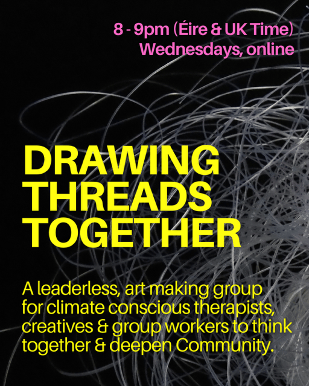
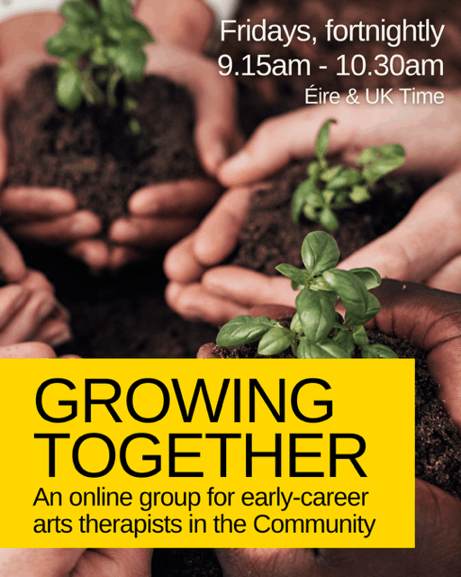
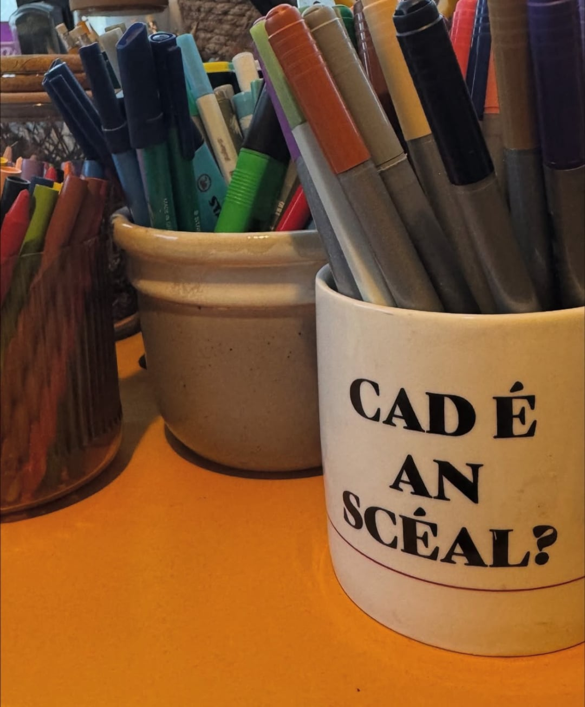
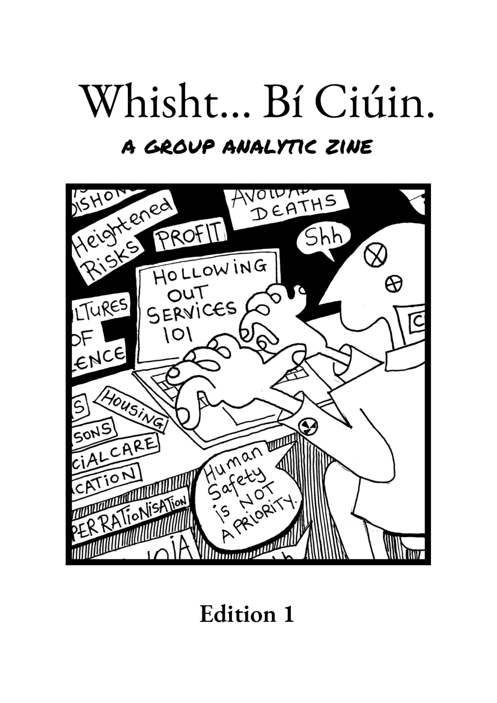
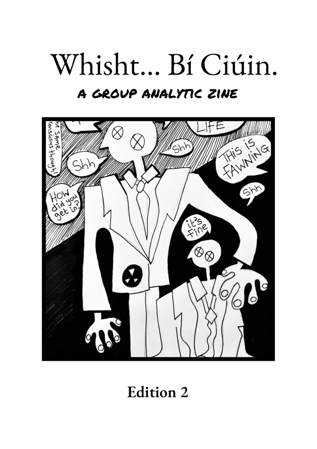
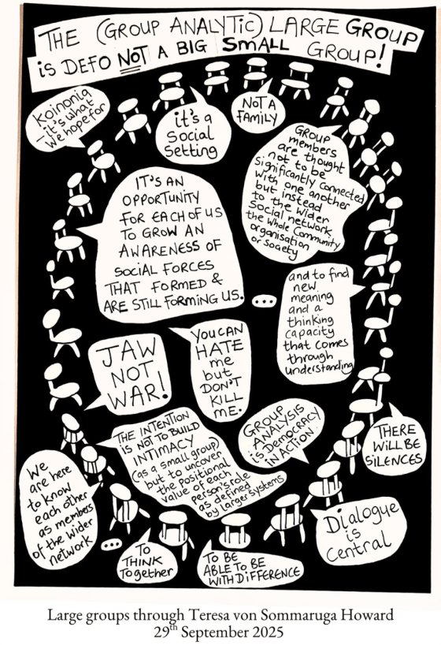

My name is Aisling (pronounced Ash-ling). I am an Irish artist and HCPC registered art psychotherapist based in the East Midlands of Britain. My approach is influenced by group analysis, psychoanalysis and the ethos of therapeutic Community.
I mostly work with the affects of institutional abuse, statutory failures and transgenerational trauma. I have extensive experience working with survivors of abuse, trauma, domestic and political violence, cultural issues, neurodivergence, ableism, climate anxiety, depression, disordered eating and diasporic experiences. I am experienced in Community incident response, disaster recovery and during the covid-19 pandemic, I worked as an art psychotherapist within the tv and film industry.
As a dual experienced art psychotherapist, I have had both formal training and lived experience of neurodivergence, the mental health industry and therapeutic communities. Graduating from Goldsmiths University in 2015 with a masters in art psychotherapy, I hold a degree in modelmaking and design for film and theatre from Ireland’s National Film School (2007) and a diploma in group analytic psychotherapy with Group Analysis India (2022). HERE is my CV.

Art therapy is a form of psychotherapy that uses creative and expressive art materials like drawing, painting, or sculpting to help people communicate, explore, and process feelings. Led by a trained art therapist, the focus is not on artistic skill but on the creative process itself as a tool for emotional healing, deepening self-awareness and reducing distress.
Art therapy is not dependant on spoken language so it is suitable for all ages. It can be particularly useful for people who have experienced trauma, injustice, displacement, abuse, eating problems and climate anxiety. You do not need to have any particular skill in art to make use of the art therapy. You do not even have to make art in sessions! Any artwork made is confidential.
Art therapists are registered with the Health Care Professionals Council to ensure quality and safety. They are trained and experienced in using art and creativity combined with psychotherapy models to help people to express complex feelings in a safe way.

Groups form microcosms of society. Dynamics arising in group therapy can echo our personal, social, cultural and political context. And so, group therapy offers space to explore who we are and the world around us.
Thinking together with others in a group can help to make sense of how the past influences the present. They can be a life line for people who are isolated; especially for those who are suffering because of social or cultural circumstances. Groups encourage imagination, connection and healthy relationships, improve communication skills reduce feelings of isolation and can help people to find their authentic voice.

Democracy involves authentic and collective, large group dialogue. As art therapists, we know that dialogue is not just about words. It includes all forms of expression in our Community including silences, different kinds of behaviour and creativity.
As social action, art making offers an accessible way for individuals and Communities to find their authentic voices and magnify them. Making art in a large art therapy group can enable authentic Community dialogue and true democracy. This method of dialogue elevates awareness, deepens insight and creates meaningful social change.
In Community, art making in a large group can help to bridge polarisation in a way safe way. It can help us to understand the origins of problems and how the past impacts the present. It's affects can be far reaching, long lasting and sustainable.

From my art therapy studio, I offer art psychotherapy for adults and young people locally in Newark and online. Sessions can be long-term or time-limited, as part of a group or one to one.
I also offer supervision for art therapists, socially engaged people and Community organisations. Click here to learn more about my approach to supervision.
Our first 30-minute conversation is free of charge. I am happy to answer any queries you might have and help you to think about whether I might be the right therapist for you.
12.30 - 2pm (Éire & UK time), Mondays
With icap (Irish Immigrant Counselling and Psychotherapy), I convene a weekly, online art therapy group for Irish adults living across Britain. Click here for flyer.

8 - 9pm (Éire & UK time), Wednesdays
Now in its second year, this is a weekly, leaderless, art making group for therapists, creatives and group workers. The group is collectively held by Community and is open to people we know living locally and globally.

9.15 - 10.30am (Éire & UK time), Fridays
This group started in September 2025 for newly qualified and early career art therapists. The group aims to support the growth of your Community practice. Click here to learn more about my approach to supervision.

Supervision is a confidential space with an experienced supervisor to talk, reflect and think together about (usually) therapy work. The aim is to ensure client welfare and support your ongoing development as a therapist. Its centres your work and the people you are working with. Context matters, so we are also often thinking about spaces, group dynamics and the world we are finding ourselves in. Ethical decision making and practice is at heart.
My approach is conversational (not clinical). Through the sharing of experiences, we are deepening our understanding and learning in meaningful conversation. I encourage creative responses and we can make art within the supervision process - if you want to. As a lived experienced, art psychotherapist, I welcome conversations about how the work and trainings affects you professionally and personally.
For Community organisations, supervision can help to ensure that your work is trauma informed. It provides reflective, thinking space and offer an additional safeguarding measure when working with children and adults with complex needs, supports learning and helps to prevent burnout.
I offer an initial 30-minute conversation, free of charge.
Individual sessions cost £60 and the weekly group therapy costs £30, per person. Prices can vary depending on what is affordable. Local authority funded sessions are £80 per session.
I offer a limited number of spaces at a reduced rate for people who are not in a position to pay my standard rates. *All allocation is currently filled. When these are available spaces, they are for people at greater risk of discrimination or exclusion from existing Community services. If this applies to you, contact me.

To begin, contact me by email and we can arrange a time to talk. My email is communityarttherapist@gmail.com
Please let me know your name and reason for contacting me, and I respond as quickly as possible. My working hours are generally 9.30am - 3pm, Monday to Friday.
Here is my privacy policy.
‘Whisht… Bí Ciúin’ meaning ‘Shh.. Be Quiet’ is new group analytic zine. Created through group work experiences, this zine is international, political and is speaking through cultural silences. Drawn by Ash …shh.
A6 Hardcopies cost £10 + postage. All profit goes towards buying more pens (so Aisling can draw more zines) and will enable Aisling to offer low cost, art therapy to people who need this. To buy a zine or request an individual print contact Aisling on communityarttherapist@gmail.com




Free AI Website Builder
CONNECT